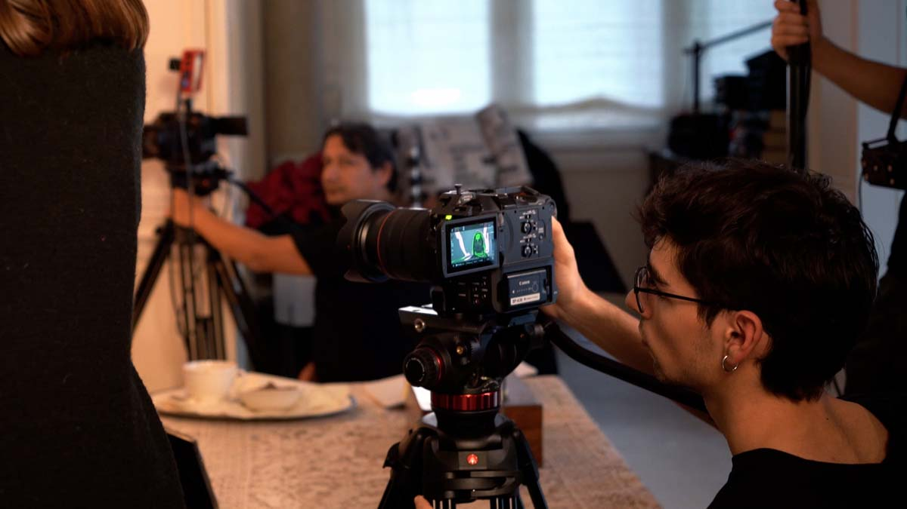
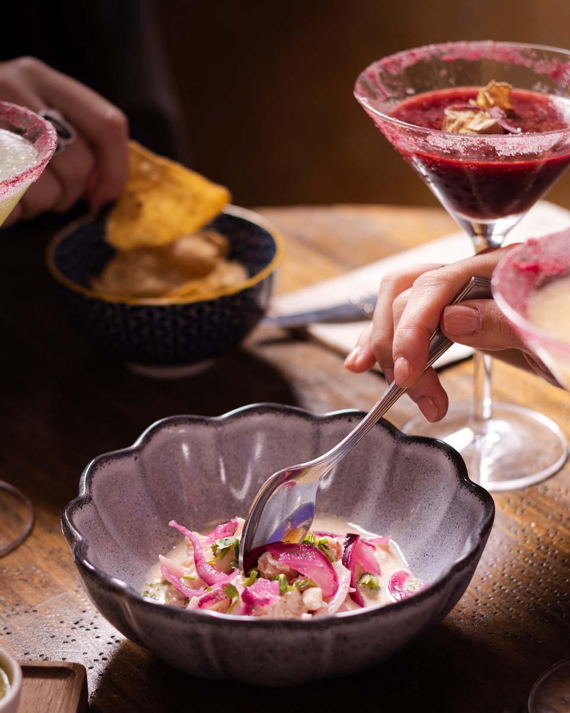
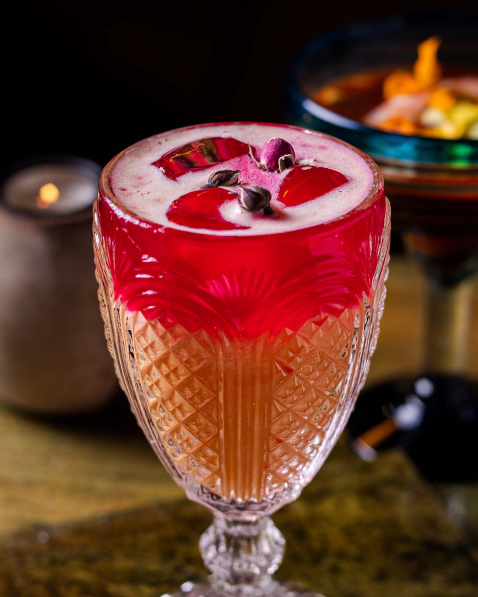
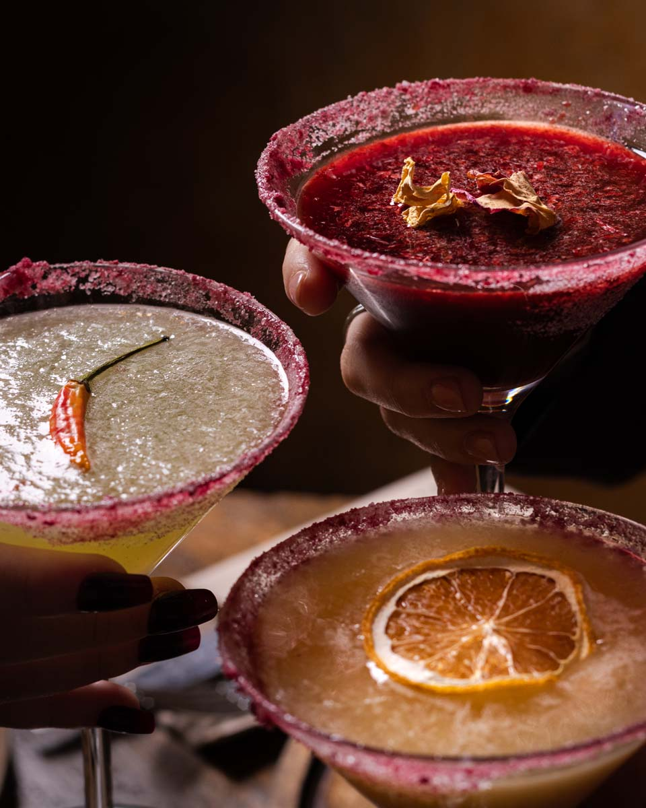
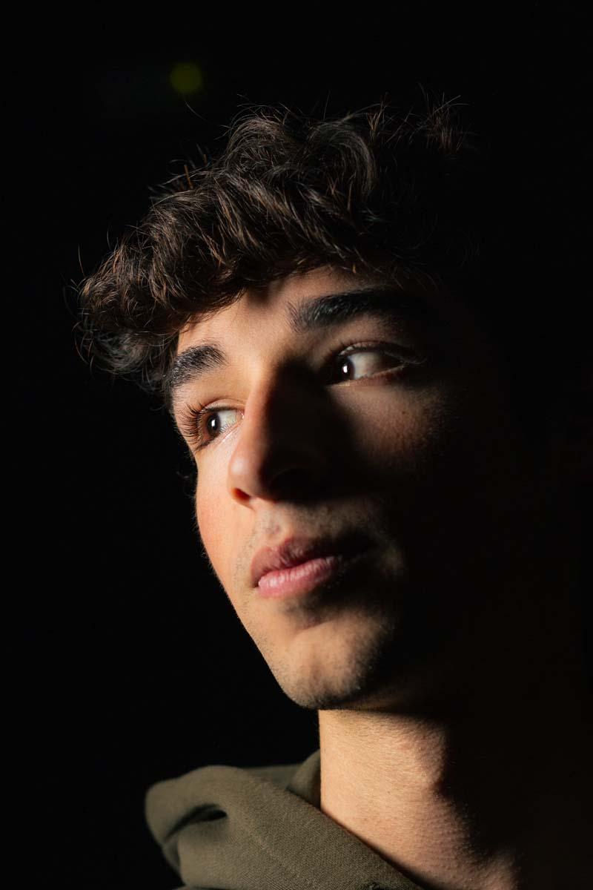
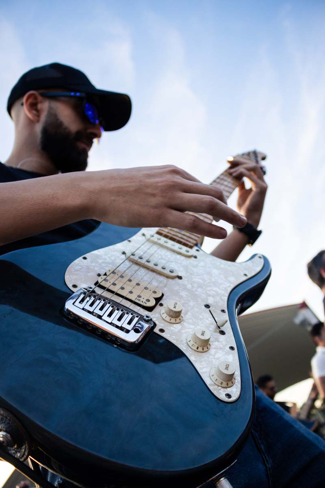
"La armonía entre la técnica y la emoción captura momentos que el tiempo no puede borrar."
Pau Rosselló
Una muestra de obras recientes
Gastronomía · Cortometrajes · RRSS · Podcasts
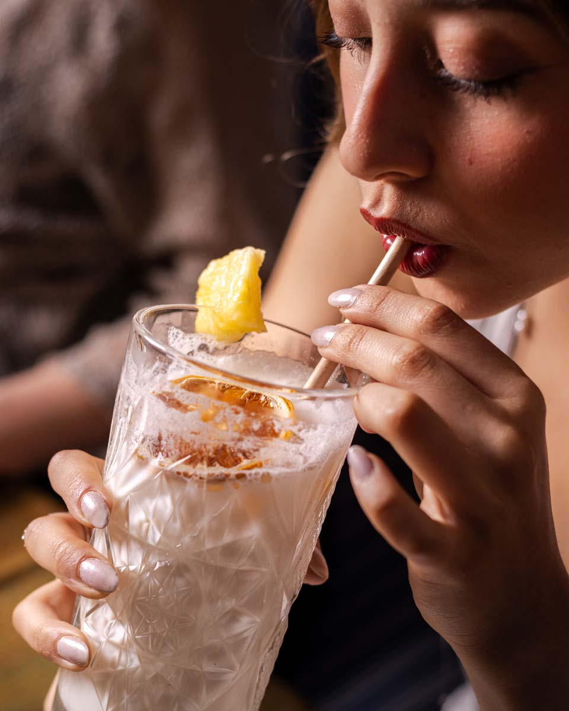
Capturando el color y textura de la alta cocina.
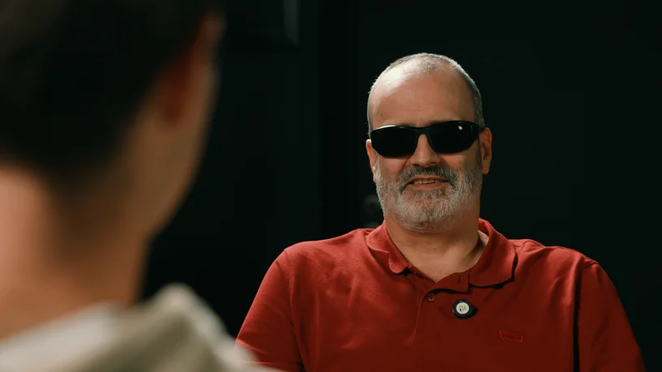
Dirección de fotografía e iluminación profesional.
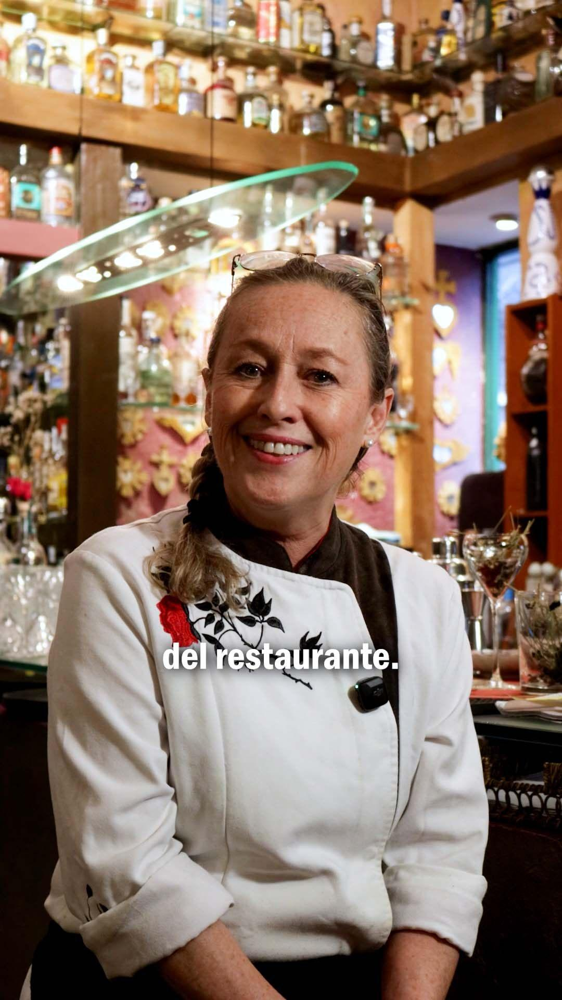
Creación de piezas verticales para Instagram y TikTok.
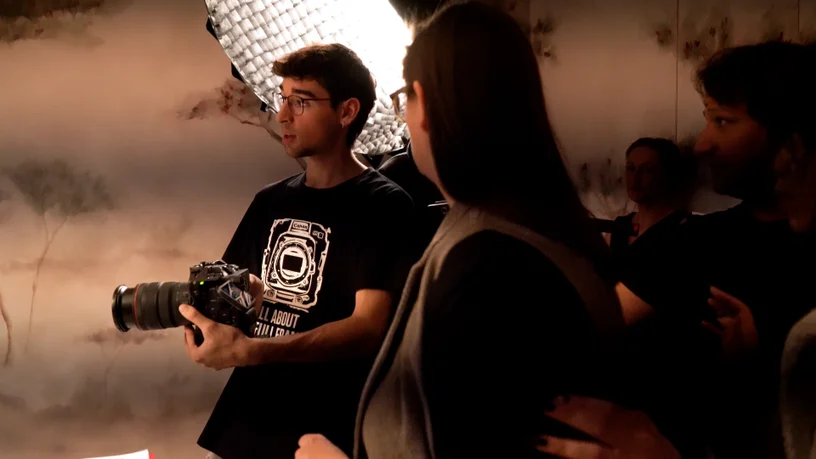
Felicitación navideña de la UFV.
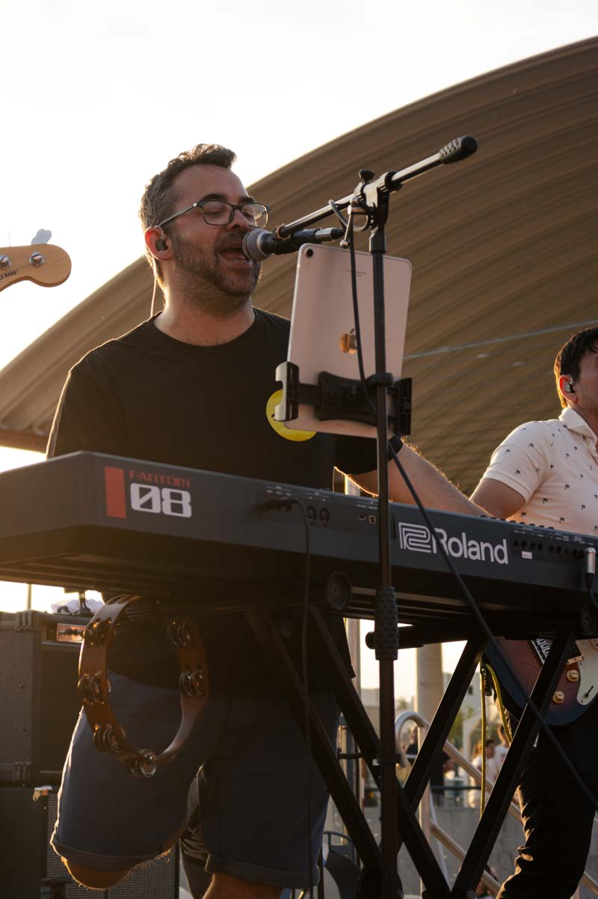
Documentando la emoción de grandes momentos.
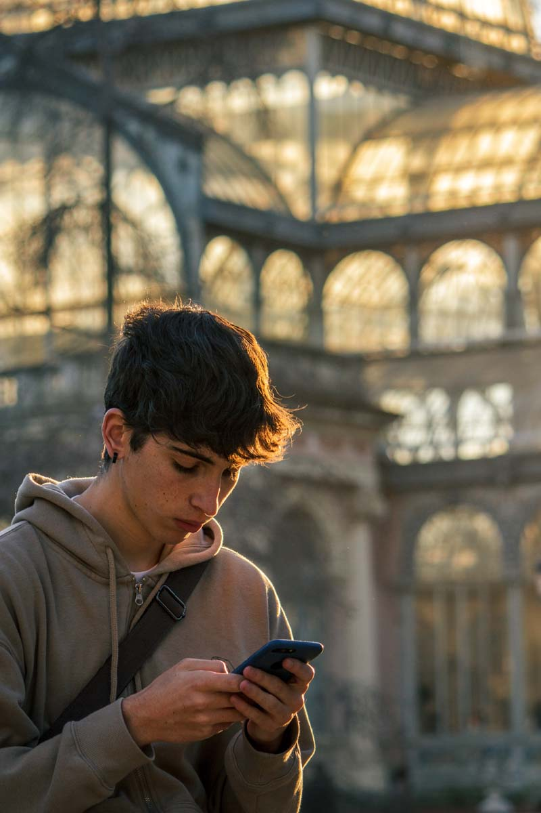
Sesiones personalizadas.
"Tuve el sensacional privilegio de contar con la colaboración de Pau y su equipo, que me ayudaron de forma excepcional con su trabajo a hacer que el evento brillase. Me siento muy orgulloso de que antiguos alumnos nuestros se hayan convertido en unos profesionales tan estupendos. Muchas gracias de corazón."
— DJ RÚA"Una sensibilidad única para captar los detalles que marcan la diferencia. El trabajo realizado en nuestra carta gastronómica superó todas las expectativas, logrando transmitir la esencia de cada plato con una elegancia visual excepcional. Un profesional que entiende que la gastronomía también se disfruta con la mirada."
— Entre Suspiro y Suspiro"Contar con el talento de un antiguo alumno para documentar los momentos más especiales de nuestra institución ha sido un acierto absoluto. Su capacidad para capturar la alegría de los estudiantes y la solemnidad de los actos con tal naturalidad es admirable. Un trabajo impecable que ya forma parte de nuestra historia."
— Colegio Ntra. Sra. del Buen Consejo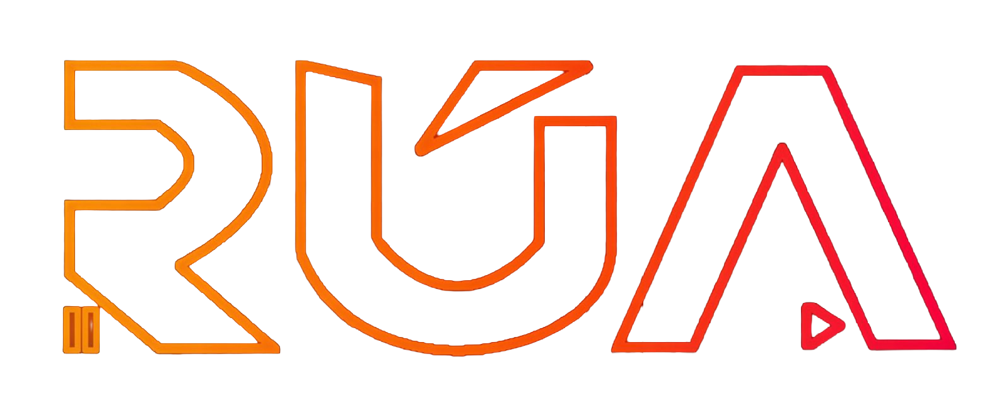
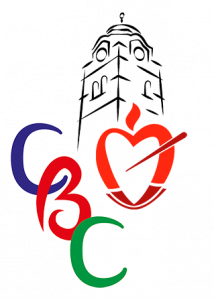
Toda gran historia merece ser
captada con la emoción correcta.
¿Tienes algo en mente? Me encantará escucharte.